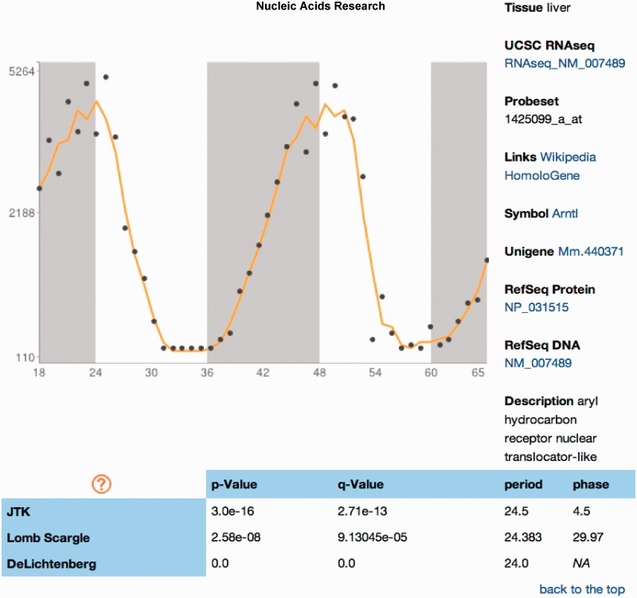

From Pizarro et al., Nucleic Acids Research 2013. Open-access figure (CC BY-NC 3.0).

From Pizarro et al., Nucleic Acids Research 2013. Open-access figure (CC BY-NC 3.0).
Database Resource
CircaDB is the lab’s searchable database of mammalian circadian gene-expression profiles, designed to make rhythmic datasets explorable by gene, tissue, phase, and supporting statistics.
From Pizarro et al., Nucleic Acids Research 2013. Open-access figure (CC BY-NC 3.0).

From Pizarro et al., Nucleic Acids Research 2013. Open-access figure (CC BY-NC 3.0).
CircaDB helped make circadian transcriptomics usable outside specialized computational pipelines. It gave experimental and computational investigators a common entry point for browsing rhythmic genes, comparing tissues, and moving between gene-level intuition and genome-scale datasets.
The database fits the broader lab emphasis on systems circadian biology: not just identifying core clock components, but making large rhythmic datasets interpretable and reusable.